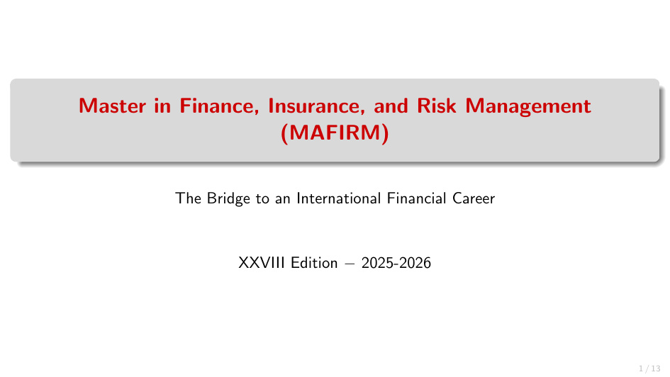

Since 2021 Roberto Marfè is Director of the II level Master in Finance, Insurance, and Risk Management (MAFIRM) a joint initiative of the University of Turin and the Collegio Carlo Alberto started in 1998.
Program Overview:
The MAFIRM is a one-year, full-time program taught entirely in English, designed to prepare students for
high-level careers in finance, banking, insurance, and consulting.
An established international faculty and top-notch practitioners provide rigorous quantitative courses,
applied case studies, and data science applications.
Applications are open and merit-based tuition fee waivers are available.
